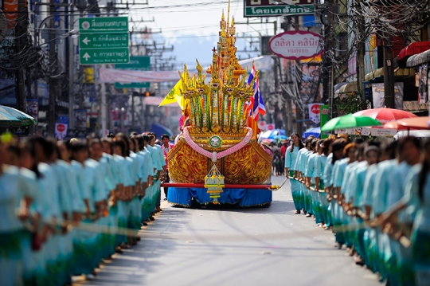
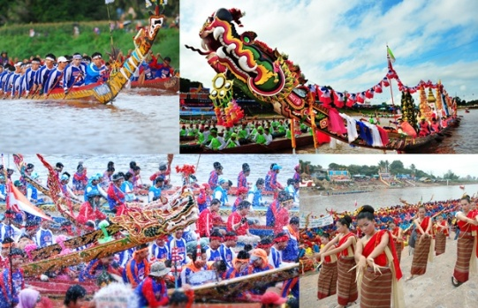
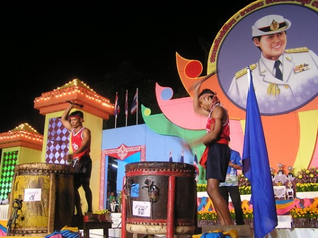
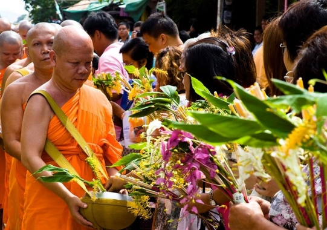
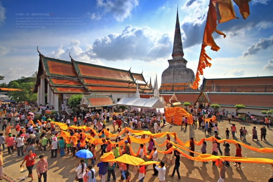

| ประเพณีชักพระ |
|---|
เป็นประเพณีท้องถิ่นในภาคใต้ตอนกลาง เป็นประเพณีที่เกี่ยวข้องกับความศรัทธาในพระ พุทธศาสนา และวิถีชีวิตชาวใต้ที่มีความผูกพันกับน้ำ ประเพณีชักพระหรือลากพระจัดขึ้นในช่วงออกพรรษา โดยเฉพาะในวันแรม 1 ค่ำ เดือน 11 ด้วยความเชื่อว่าเป็นวันที่พระพุทธเจ้าเสด็จกลับจากสวรรค์ชั้นดาว ดึงส์ลงมายังโลกมนุษย์ จึงมีการจัดงานเพื่อแสดงความยินดี ประชาชนจึงอัญเชิญพระพุทธองค์ขึ้นประทับ บนบุษบกที่จัดเตรียมไว้ แล้วแห่แหนไปยังที่ประทับ ส่วนใหญ่จะเป็นการจัดขบวนทางเรือ แต่บริเวณใดที่ ห่างไกลแม่น้ำก็จะจัดพิธีทางบก |
|  |
| ประเพณีแข่งเรือหน้าพระที่นั่ง และงานของดีเมืองนรา จังหวัดนราธิวาส |
“สีสันเรือกอและอันคงเอกลักษณ์ จากวิถีชีวิตชาวประมงนำสู่ประเพณีท้องถิ่น เหล่าฝีพายนับสิบประจำในลำเรือ จากนั้นจึงจ้ำพายสู่หลักชัย ใครเร็วกว่าคือผู้ชนะ เสียงปรบมือโห่ร้องส่งกำลังใจจากกองเชียร์ดังรอบ ภาพบรรยากาศประเพณีแข่งเรือหน้าพระที่นั่ง และงานของดีเมืองนรา จึงเต็มไปด้วยสีสันเช่นความงามของลำเรือ” เมื่อครั้งพระบาทสมเด็จพระเจ้าอยู่หัวและสมเด็จพระนางเจ้าฯ พระบรมราชินีนาถ พระบรมวงศานุวงศ์ เสด็จแปรพระราชฐานมาประทับแรม ณ พระตำหนักทักษิณราชนิเวศน์ ทรงเสด็จออกเยี่ยมราษฎร เพื่อรับฟังปัญหาความทุกข์ร้อนของประชาชน เป็นที่มาของโครงการต่างๆ เพื่อแก้ไขปัญหาความเดือดร้อน ช่วยให้ประชาชนได้ใช้ชีวิตอย่างมีความสุข ด้วยพระมหากรุณาธิคุณ ชาวนราธิวาสจึงได้นำเอาการแข่งขันเรือกอและประเพณีไทยอันเก่าแก่ถวายทอดพระเนตรเพื่อเทิดพระเกียรติในพระมหากรุณาธิคุณอันล้นพ้น นำไปสู่การปฏิบัติตามประเพณีซึ่งเริ่มจางหายไปให้กลับมาดำรงอยู่อีกครั้ง ในฤดูน้ำหลาก วิถีชีวิตของชาวประมงยังคงดำเนิน ขณะที่อีกด้านถือเป็นโอกาสประชันความแข็งแกร่งของเหล่าฝีพายจากทั่วหมู่บ้าน ตำบล เรือกอและหลากสีสันลอยลำเป็นระนาบเดียวกันบนผืนน้ำ แล้วจึงกระโจนออกไปด้วยแรงสามัคคีจากเหล่าฝีพาย มุ่งตรงไปยังหลักชัยด้วยจังหวะอันพร้อมเพรียง ผืนน้ำกระเซ็นเป็นละออง เพียงแค่อึดใจเดียวผู้เร็วกว่าจึงได้คว้าเอาธงซึ่งถือเป็นหลักชัยมาครอง และนับเป็นชัยชนะในเที่ยวนั้น |
|  |
| ประเพณีแข่งขันตีโพน จังหวัดพัทลุง |
“หลังประดิดประดอยโพนพร้อมสำหรับการประชันแล้ว เสียงโพนจึงดังกึกก้อง สร้างความครึกครื้น รื่นเริง ในงานประเพณีแข่งขันตีโพน เครื่องดนตรีพื้นบ้านซึ่งอยู่คู่กับวิถีชีวิตของคนเมืองลุง ด้วยเสียงอันทุ้มแหลมกังวาน เกิดเป็นคำกล่าวที่ว่า จะร้อยพันแม้นหมื่นเสียงตะโกน ฤาจะสู้เสียงแข่งโพนที่เมืองลุง” โพน ชื่อเรียกเครื่องดนตรีพื้นบ้านของชาวปักษ์ใต้ เกี่ยวพันกับวิถีชีวิตของคนในอดีต ใช้บอกเหตุร้ายเวลากลางคืน บ้างใช้สำหรับเรียกประชุมหมู่บ้าน เป็นสัญญาณเมื่อถึงเวลาฉันอาหาร รวมทั้งใช้เป็นจังหวะในงานประเพณีลากพระ พัฒนาสู่ประเพณีการแข่งขันตีโพยด้วยในวันงานลากพระ วัดในละแวกเดียวกันต่างจัดงานกันยิ่งใหญ่ เสียงโพนจึงดังกึกก้องจนไม่สามารถแยกได้ว่าเสียงนั้นดังมาจากวัดไหน นำสู่การแข่งขันประชันเสียงโพน โดยเฉพาะในจังหวัดพัทลุงจะมีการจัดงานขึ้นอย่างยิ่งใหญ่ในทุกๆ ปี ประเพณีแข่งขันตีโพนจะเริ่มตั้งแต่ช่วงปลายเดือนสิบจนถึงวันแรมหนึ่งค่ำเดือนสิบเอ็ด จัดควบคู่ไปกับประเพณีลากพระในวันออกพรรษา ก่อนถึงวันแข่งขัน เหล่านักตีโพนต่างขะมักเขม้นกับการประดิษฐ์เพื่อให้ได้โพนที่เสียงดีที่สุด เลือกเอาไม้เนื้อแข็ง ตาลโตนด จำปาป่า ขนุนป่า แกะเป็นรูกลมกลวงคล้ายอกไก่ ใช้หนังควายแก่ซึ้งเป็นที่นิยมด้วยความเหนียวทนทานเป็นหนังหุ้ม โพนของพัทลุงจึงมีชื่อเสียงโด่งดัง ด้วยความพิถีพิถันในการประดิษฐ์ |
|  |
| ประเพณีตักบาตรธูปเทียน |
ประเพณีตักบาตรธูปเทียนคือการถวายธูปเทียนแด่พระสงฆ์ ซึ่งประเพณีตักบาตรธูปเทียนถือเป็นส่วนหนึ่งของการถวายสังฆทานในวันเข้าพรรษา ช่วงวันแรม ๑ ค่ำ เดือน ๘ ซึ่งการตักบาตรธูปเทียนจะมีขึ้นที่วัดพระมหาธาตุวรมหาวิหาร จังหวัดนครศรีธรรมราชเพียงแห่งเดียว แต่ปรากฏว่าเครื่องสังฆทานที่ชาวบ้านนำมาถวายนั้นมากเกินความจำเป็น จึงได้อาราธนาพระสงฆ์จากวัดต่างๆ มารับเครื่องสังฆทานนั้น ประเพณีตักบาตรธูปเทียนมีพิธีกรรมโดย นิมนต์พระสงฆ์จากวัดอื่นๆ ยืนเรียงแถวที่หน้าวิหาร และชาวบ้านจะนำเครื่องสังฆทานพร้อมทั้งดอกไม้ธูปเทียนที่เตรียมมาใส่ในย่ามพระ เมื่อเสร็จแล้วชาวบ้านจะทำการจุดเปรียง (การจุดเปรียงคือ การนำน้ำมันมะพร้าวใส่ในเปลือกหอยพร้อมด้วยด้ายดิบและจุดไฟที่ด้ายเพื่อให้ไฟสว่างไสวไปทั่วทั้งวัด) ตามหน้าพระพุทธรูปและลานเจดีย์ภายในวัดพระมหาธาตุวรมหาวิหาร “แต่ปัจจุบันประเพณีตักบาตรธูปเทียนได้เปลี่ยนแปลงไปจากเดิมบ้าง เช่น แต่เดิมชาวบ้านจะเตรียมดอกไม้ธูปเทียนมาเอง แต่ปัจจุบันดอกไม้ธูปเทียนจะมีวางขายทั่วไป หรือเมื่อก่อนพระสงฆ์จะเข้าแถวรับบาตรแต่เฉพาะบริเวณหน้าวิหาร แต่ในปัจจุบันได้ขยายพื้นที่ไปถึงหน้าวัด เมื่อครั้งอดีตหลังจากใส่บาตรเรียบร้อยแล้วจะมีการจุดเปรียง แต่ปัจจุบันได้เปลี่ยนมาจุดเทียนไขแทน เพราะการจุดเปรียงทำให้เกิดไปไหม้อยู่บ่อยครั้ง |
|  |
| ประเพณีแห่ผ้าขึ้นธาตุ |
ประเพณีแห่ผ้าขึ้นธาตุ คือ ประเพณีแห่ผ้าขึ้นโอบฐานเจดีย์พระบรมธาตุเมืองนคร จังหวัดนครศรีธรรมราช สมัยโบราณเรียกประเพณีนี้ว่า “ประเพณีแห่พระบฏขึ้นธาตุ” (ผ้าพระบฏ คือ ผ้าผืนยาวและใหญ่และมีการเขียนรูปพุทธประวัติลงบนฝืนผ้านั้น) มูลเหตุของการเกิดประเพณีแห่ผ้าขึ้นธาตุ ตามตำนานได้กล่าวไว้ว่า เมื่อราวปี พ.ศ. ๑๗๗๓ ได้มีชาวพุทธจากเมืองอินทปัตแห่งกัมพูชากลุ่มหนึ่งกำลังเดินทางไปเกาะลังกาเพื่อนำผ้าพระบฏไปบูชาพระเขี้ยวแก้ว แต่เกิดเหตุคลื่นซัดเรือแตกทำให้ผ้าพระบฏและชาวพุทธประมาณสิบคนลอยไปติดริมฝั่งที่อำเภอปากพนัง ครั้นพระเจ้าศรีธรรมโศกราช ผู้ปกครองเมืองนครศรีธรรมราชทราบข่าวจึงได้สั่งให้นำผ้าพระบฏนั้นไปห่มพระบรมธาตุเจดีย์ เนื่องในโอกาสสมโภชพระบรมธาตุและถือเป็นประเพณีแห่พระบฏขึ้นธาตุที่ผู้ครองเมืองนครศรีธรรมราชทุกคนจะต้องปฏิบัติในทุกสมัย “ตามประวัติการแห่ผ้าขึ้นธาตุจะทำในโอกาสสมโภชพระบรมธาตุประจำปี แต่ไม่ปรากฏหลักฐานแน่ชัดว่ากระทำในวันใด ครั้นถึงรัชสมัยของพระบาทสมเด็จพระจอมเกล้าเจ้าอยู่หัวรัชกาลที่ ๔ ประเพณีแห่ผ้าขึ้นธาตุมีการปฏิบัติ ๒ วัน คือ ในวันขึ้น ๑๕ ค่ำ เดือน ๓ (วันมาฆบูชา) และวันขึ้น ๑๕ ค่ำ เดือน ๖ (วันวิสาขบูชา)” “พิธีกรรมของประเพณีแห่ผ้าขึ้นธาตุหรือประเพณีแห่พระบฏขึ้นธาตุ ในสมัยโบราณ จะจัดเป็นขบวนอันใหญ่โอและเอิกเกริกเพียงขบวนเดียว ซึ่งนอกจากจะมีผ้าพระบฏแล้วยังมีสำรับอาหารคาวหวาน กระบุงหรือกระจาดที่บรรจุผักสด ผลไม้และของแห้ง และประดับด้วยธงที่ทำจากผ้าสีต่างๆ นำไปถวายพระสงฆ์ที่วัดด้วยวิธีสลากภัต (สลากภัตคือวิธีการถวายภัตตาหารพระสงฆ์ด้วยการให้พระสงฆ์จับสลาก) จากนั้นจะเป็นพิธีการห่มผ้าพระบฏรอบพระธาตุ” |
|  |
 |
 |
 |